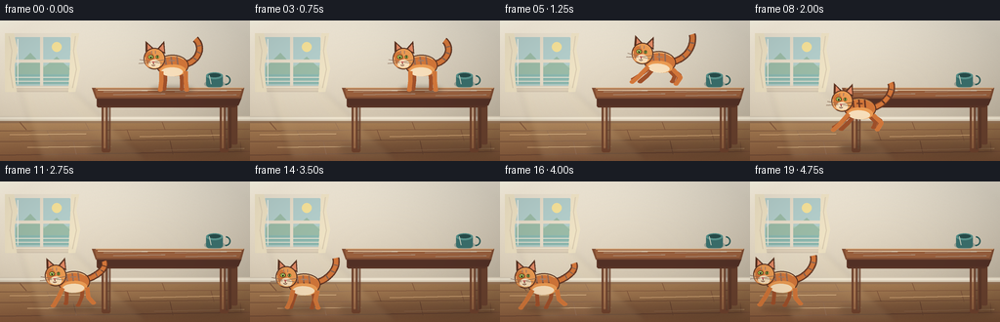
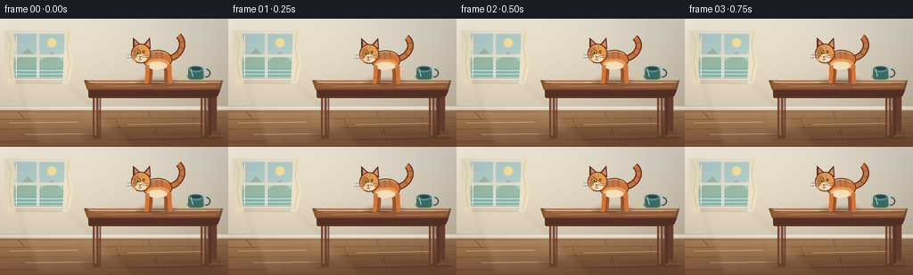

CODING AGENTS AS PIXEL WORLD MODELS
traex/DeepSeek-V4.1-Flash · dynamic_spatial_relationship_0011
点击播放 · 原生 RGB 像素
逐轮保存的候选
回放视频、检查图与代码变化。
每份候选均可单独播放。实际图片检查记录在下方工具轨迹中。
候选 01播放与检查图
点击播放 · 原生 RGB 像素

展开代码变化
--- 上一保存版本
+++ 本次保存版本
@@ -0,0 +1,418 @@
+from pathlib import Path
+import math
+
+import numpy as np
+from PIL import Image, ImageDraw, ImageFilter
+
+import artifact_io
+
+
+W, H, FRAMES, FPS = 256, 144, 20, 4
+SS = 4
+ROOT = Path(__file__).resolve().parent
+
+
+def rgba(color, alpha=255):
+ return tuple(color) + (alpha,) if len(color) == 3 else tuple(color)
+
+
+def xy(points):
+ return [(round(x * SS), round(y * SS)) for x, y in points]
+
+
+def box(values):
+ return tuple(round(value * SS) for value in values)
+
+
+def cubic_points(p0, p1, p2, p3, count=28):
+ points = []
+ for index in range(count):
+ t = index / (count - 1)
+ u = 1.0 - t
+ x = u**3 * p0[0] + 3 * u**2 * t * p1[0] + 3 * u * t**2 * p2[0] + t**3 * p3[0]
+ y = u**3 * p0[1] + 3 * u**2 * t * p1[1] + 3 * u * t**2 * p2[1] + t**3 * p3[1]
+ points.append((x, y))
+ return points
+
+
+def draw_background():
+ width, height = W * SS, H * SS
+ y = np.arange(height, dtype=np.float32)[:, None, None] / (H * SS)
+ x = np.arange(width, dtype=np.float32)[None, :, None] / (W * SS)
+ light = np.clip(1.06 - 0.16 * x - 0.07 * y, 0.78, 1.08)
+
+ wall_top = np.array([246, 238, 221], dtype=np.float32)
+ wall_bottom = np.array([225, 211, 188], dtype=np.float32)
+ wall_mix = np.clip(y / 0.73, 0.0, 1.0)
+ wall = wall_top * (1 - wall_mix) + wall_bottom * wall_mix
+
+ floor_top = np.array([180, 136, 91], dtype=np.float32)
+ floor_bottom = np.array([132, 87, 58], dtype=np.float32)
+ floor_mix = np.clip((y - 0.72) / 0.28, 0.0, 1.0)
+ floor = floor_top * (1 - floor_mix) + floor_bottom * floor_mix
+
+ floor_mask = y >= 103.5 / H
+ pixels = np.where(floor_mask, floor, wall)
+ pixels = pixels * light
+
+ rng = np.random.default_rng(17)
+ grain = rng.normal(0.0, 1.55, (height, width, 1))
+ pixels = np.clip(pixels + grain, 0, 255).astype(np.uint8)
+ return Image.fromarray(pixels, "RGB").convert("RGBA")
+
+
+def draw_room(draw):
+ # Baseboard and floor boards.
+ draw.rectangle(box((0, 98, W, 105)), fill=rgba((218, 205, 184)))
+ draw.rectangle(box((0, 99, W, 101)), fill=rgba((240, 230, 210)))
+ draw.rectangle(box((0, 103, W, 105)), fill=rgba((151, 116, 86)))
+
+ floor_lines = [
+ ((0, 113), (W, 111), 1.0, (132, 91, 64, 86)),
+ ((0, 124), (W, 121), 1.0, (122, 82, 58, 96)),
+ ((0, 138), (W, 134), 1.2, (114, 75, 54, 100)),
+ ]
+ for start, end, width, color in floor_lines:
+ draw.line(xy([start, end]), fill=color, width=round(width * SS))
+
+ seams = [
+ ((20, 104), (27, 112)),
+ ((87, 104), (91, 112)),
+ ((166, 104), (169, 112)),
+ ((235, 104), (237, 112)),
+ ((48, 113), (53, 123)),
+ ((130, 112), (134, 123)),
+ ((216, 112), (219, 123)),
+ ((75, 124), (78, 137)),
+ ((174, 123), (177, 137)),
+ ((246, 124), (247, 137)),
+ ]
+ for start, end in seams:
+ draw.line(xy([start, end]), fill=(126, 84, 59, 70), width=round(0.8 * SS))
+
+ # A few long, restrained wood grain strokes.
+ grains = [
+ ((10, 117), (88, 116)),
+ ((143, 119), (241, 117)),
+ ((28, 130), (114, 129)),
+ ((158, 133), (250, 131)),
+ ]
+ for start, end in grains:
+ draw.line(xy([start, end]), fill=(236, 190, 137, 42), width=max(1, round(0.7 * SS)))
+
+
+def draw_window(image):
+ layer = Image.new("RGBA", image.size, (0, 0, 0, 0))
+ draw = ImageDraw.Draw(layer)
+
+ # Soft frame shadow.
+ draw.rounded_rectangle(box((12, 15, 77, 73)), radius=round(2.0 * SS), fill=(84, 59, 44, 38))
+ draw.rounded_rectangle(box((11, 13, 76, 71)), radius=round(2.0 * SS), fill=rgba((241, 232, 214)))
+ draw.rounded_rectangle(box((15, 17, 72, 67)), radius=round(1.2 * SS), fill=(183, 210, 207, 255))
+
+ # Simple distant landscape behind the glass.
+ draw.rectangle(box((16, 46, 71, 65)), fill=(174, 205, 185, 255))
+ draw.polygon(xy([(16, 48), (31, 33), (45, 48), (58, 37), (71, 49), (71, 65), (16, 65)]),
+ fill=(158, 191, 170, 255))
+ draw.ellipse(box((53, 22, 63, 32)), fill=(250, 230, 157, 255))
+ draw.rectangle(box((16, 55, 71, 65)), fill=(143, 187, 178, 255))
+ for start, end in [((16, 58), (71, 58)), ((16, 62), (71, 62))]:
+ draw.line(xy([start, end]), fill=(220, 237, 229, 90), width=SS)
+
+ # Window mullions and sill.
+ frame_color = rgba((237, 226, 206))
+ draw.rectangle(box((41, 17, 44, 67)), fill=frame_color)
+ draw.rectangle(box((15, 40, 72, 43)), fill=frame_color)
+ draw.rectangle(box((13, 67, 74, 72)), fill=rgba((224, 209, 186)))
+ draw.line(xy([(14, 68), (73, 68)]), fill=(255, 246, 225, 180), width=SS)
+ draw.line(xy([(18, 19), (18, 65)]), fill=(255, 255, 255, 95), width=SS)
+
+ # Light linen curtain edges.
+ curtain = (244, 231, 199, 220)
+ draw.polygon(xy([(5, 13), (14, 13), (18, 30), (14, 49), (17, 73), (5, 73)]), fill=curtain)
+ draw.polygon(xy([(73, 13), (81, 13), (78, 29), (82, 49), (77, 73), (70, 73)]), fill=curtain)
+ draw.line(xy([(9, 16), (12, 31), (10, 50), (13, 69)]), fill=(206, 187, 153, 125), width=SS)
+ draw.line(xy([(77, 16), (75, 31), (78, 50), (74, 69)]), fill=(206, 187, 153, 125), width=SS)
+
+ image.alpha_composite(layer)
+
+
+def draw_sunbeam(image):
+ layer = Image.new("RGBA", image.size, (0, 0, 0, 0))
+ draw = ImageDraw.Draw(layer)
+ draw.polygon(xy([(19, 67), (70, 67), (151, 143), (42, 143)]), fill=(255, 238, 186, 21))
+ draw.polygon(xy([(27, 69), (61, 69), (115, 143), (63, 143)]), fill=(255, 247, 213, 14))
+ layer = layer.filter(ImageFilter.GaussianBlur(round(3.0 * SS)))
+ image.alpha_composite(layer)
+
+
+def draw_table(image):
+ layer = Image.new("RGBA", image.size, (0, 0, 0, 0))
+ draw = ImageDraw.Draw(layer)
+
+ # Floor shadow beneath the table.
+ draw.ellipse(box((91, 124, 250, 139)), fill=(67, 42, 33, 55))
+ layer = layer.filter(ImageFilter.GaussianBlur(round(3.2 * SS)))
+ image.alpha_composite(layer)
+
+ layer = Image.new("RGBA", image.size, (0, 0, 0, 0))
+ draw = ImageDraw.Draw(layer)
+
+ # Far legs first.
+ draw.rounded_rectangle(box((229, 81, 237, 131)), radius=round(2.1 * SS), fill=rgba((91, 55, 40)))
+ draw.rounded_rectangle(box((237, 83, 243, 127)), radius=round(1.6 * SS), fill=rgba((105, 65, 46)))
+
+ # Near legs.
+ for left in (104, 225):
+ draw.rounded_rectangle(box((left, 80, left + 9, 135)), radius=round(2.0 * SS),
+ fill=rgba((110, 66, 45)))
+ draw.rounded_rectangle(box((left + 2, 82, left + 4, 131)), radius=SS,
+ fill=(171, 112, 73, 120))
+ draw.rounded_rectangle(box((left + 6, 83, left + 8, 132)), radius=SS,
+ fill=(72, 43, 33, 95))
+
+ # Apron and tabletop.
+ draw.rounded_rectangle(box((99, 77, 242, 89)), radius=round(2.0 * SS), fill=rgba((90, 53, 39)))
+ draw.rectangle(box((101, 82, 240, 86)), fill=rgba((112, 67, 47)))
+ draw.polygon(xy([(94, 69), (250, 69), (247, 80), (98, 80)]), fill=rgba((128, 78, 52)))
+ draw.polygon(xy([(97, 70), (248, 70), (245, 78), (99, 78)]), fill=rgba((153, 96, 62)))
+ draw.polygon(xy([(99, 80), (247, 80), (244, 87), (102, 87)]), fill=rgba((83, 49, 38)))
+ draw.line(xy([(98, 69), (249, 69)]), fill=(215, 157, 102, 210), width=round(1.1 * SS))
+ draw.line(xy([(100, 71), (247, 71)]), fill=(245, 194, 132, 90), width=SS)
+
+ # Wood grain.
+ grain_lines = [
+ ((106, 73), (145, 72), (151, 72)),
+ ((116, 76), (165, 75), (169, 75)),
+ ((179, 73), (226, 72), (232, 72)),
+ ((190, 77), (239, 76), (242, 76)),
+ ]
+ for start, middle, end in grain_lines:
+ draw.line(xy([start, middle, end]), fill=(92, 51, 37, 80), width=max(1, round(0.75 * SS)),
+ joint="curve")
+
+ # Small teal cup gives the table scale without competing with the cat.
+ draw.ellipse(box((209, 61, 230, 69)), fill=(45, 83, 80, 70))
+ draw.rounded_rectangle(box((211, 55, 228, 68)), radius=round(3.0 * SS), fill=rgba((58, 111, 108)))
+ draw.ellipse(box((211, 53, 228, 60)), fill=rgba((89, 148, 141)))
+ draw.ellipse(box((213, 54, 226, 58)), fill=rgba((39, 76, 74)))
+ draw.arc(box((226, 56, 236, 66)), 275, 95, fill=rgba((47, 95, 91)), width=round(1.4 * SS))
+ draw.line(xy([(214, 56), (216, 65)]), fill=(174, 211, 197, 105), width=SS)
+
+ image.alpha_composite(layer)
+
+
+def draw_leg(draw, shoulder, knee, paw, color, width):
+ draw.line(xy([shoulder, knee, paw]), fill=rgba(color), width=round(width * SS), joint="curve")
+ radius = width * 0.58
+ x, y = paw
+ draw.ellipse(box((x - radius, y - radius * 0.65, x + radius, y + radius * 0.65)),
+ fill=rgba(color))
+
+
+def draw_cat_sprite(pose, phase, tail_wave):
+ sprite = Image.new("RGBA", (100 * SS, 92 * SS), (0, 0, 0, 0))
+ draw = ImageDraw.Draw(sprite)
+
+ outline = (91, 52, 35)
+ dark_orange = (160, 81, 43)
+ orange = (211, 119, 58)
+ light_orange = (237, 157, 84)
+ cream = (249, 224, 188)
+
+ # Tail, drawn behind the body.
+ if pose == "jump":
+ tail_points = cubic_points((59, 43), (73, 39), (81, 25), (77, 15 + tail_wave * 1.2))
+ elif pose == "run":
+ tail_points = cubic_points((59, 42), (72, 38), (81, 28 + tail_wave), (78, 20 + tail_wave * 1.6))
+ else:
+ tail_points = cubic_points((59, 43), (73, 40), (79, 25 + tail_wave), (70, 17 + tail_wave * 1.2))
+
+ draw.line(xy(tail_points), fill=rgba(outline), width=round(7.2 * SS), joint="curve")
+ draw.line(xy(tail_points), fill=rgba(dark_orange), width=round(5.3 * SS), joint="curve")
+ draw.line(xy(tail_points[2:]), fill=rgba(orange), width=round(3.9 * SS), joint="curve")
+ for index in (8, 14, 20):
+ if index + 1 < len(tail_points):
+ p0, p1 = tail_points[index], tail_points[index + 1]
+ draw.line(xy([p0, p1]), fill=(104, 54, 34, 180), width=round(4.8 * SS))
+
+ # Legs and feet.
+ if pose == "jump":
+ draw_leg(draw, (42, 50), (35, 59), (28, 66), dark_orange, 4.2)
+ draw_leg(draw, (59, 50), (68, 56), (66, 63), dark_orange, 4.2)
+ far_front = ((38, 50), (29, 58), (21, 64))
+ far_back = ((55, 50), (63, 57), (61, 63))
+ near_front = ((35, 50), (26, 61), (20, 67))
+ near_back = ((60, 50), (69, 58), (65, 65))
+ elif pose == "run":
+ swing = math.sin(phase)
+ lift_a = max(0.0, math.sin(phase)) * 2.8
+ lift_b = max(0.0, -math.sin(phase)) * 2.8
+ far_front = ((39, 49), (36 + 3.8 * swing, 59), (33 + 7.0 * swing, 68 - lift_a))
+ far_back = ((55, 49), (57 - 3.4 * swing, 59), (55 - 6.5 * swing, 68 - lift_b))
+ near_front = ((35, 50), (33 - 4.2 * swing, 60), (30 - 7.2 * swing, 68 - lift_b))
+ near_back = ((60, 50), (58 + 3.8 * swing, 60), (61 + 7.0 * swing, 68 - lift_a))
+ else:
+ far_front = ((39, 49), (39, 59), (38, 68))
+ far_back = ((55, 49), (56, 59), (56, 68))
+ near_front = ((35, 50), (35, 60), (34, 69))
+ near_back = ((60, 50), (60, 60), (61, 69))
+
+ draw_leg(draw, *far_front, dark_orange, 4.1)
+ draw_leg(draw, *far_back, dark_orange, 4.1)
+
+ # Torso with a warm rim and soft belly.
+ draw.ellipse(box((30, 33, 63, 55)), fill=rgba(outline))
+ draw.ellipse(box((31, 34, 62, 54)), fill=rgba(orange))
+ draw.ellipse(box((34, 43, 60, 55)), fill=rgba(light_orange))
+ draw.ellipse(box((35, 46, 57, 55)), fill=rgba(cream))
+ draw.arc(box((31, 34, 62, 54)), 190, 320, fill=(248, 179, 102, 180), width=round(1.1 * SS))
+
+ # Tabby markings on the flank.
+ for start, end in [((39, 36), (40, 43)), ((45, 35), (46, 43)), ((51, 35), (52, 43))]:
+ draw.line(xy([start, end]), fill=(122, 61, 37, 175), width=round(1.7 * SS))
+ draw.line(xy([(43, 39), (49, 39)]), fill=(122, 61, 37, 145), width=round(1.2 * SS))
+
+ draw_leg(draw, *near_front, orange, 4.4)
+ draw_leg(draw, *near_back, orange, 4.4)
+
+ # Ears behind the head outline.
+ draw.polygon(xy([(19, 30), (19, 19), (29, 28)]), fill=rgba(outline))
+ draw.polygon(xy([(30, 28), (38, 19), (39, 32)]), fill=rgba(outline))
+ draw.polygon(xy([(21, 28), (21, 22), (27, 28)]), fill=rgba((226, 137, 100)))
+ draw.polygon(xy([(32, 28), (37, 22), (38, 30)]), fill=rgba((226, 137, 100)))
+
+ # Head.
+ draw.ellipse(box((17, 26, 39, 48)), fill=rgba(outline))
+ draw.ellipse(box((18, 27, 38, 47)), fill=rgba(light_orange))
+ draw.ellipse(box((18, 30, 28, 46)), fill=rgba(orange))
+ draw.ellipse(box((22, 38, 34, 47)), fill=rgba(cream))
+ draw.arc(box((18, 27, 38, 47)), 70, 190, fill=(249, 181, 108, 190), width=round(1.0 * SS))
+
+ # Face: a bright green eye, small second eye, nose, and whiskers.
+ draw.ellipse(box((21.4, 33.0, 27.2, 37.6)), fill=(86, 54, 30, 255))
+ draw.ellipse(box((22.1, 33.5, 26.5, 37.1)), fill=(174, 207, 82, 255))
+ draw.ellipse(box((23.6, 33.7, 25.2, 36.8)), fill=(38, 39, 25, 255))
+ draw.ellipse(box((23.9, 34.0, 24.8, 34.9)), fill=(255, 250, 220, 240))
+ draw.ellipse(box((29.2, 33.5, 32.8, 37.0)), fill=(91, 55, 32, 255))
+ draw.ellipse(box((29.7, 34.0, 32.4, 36.5)), fill=(159, 190, 77, 255))
+ draw.ellipse(box((30.8, 34.1, 31.6, 36.2)), fill=(40, 39, 26, 255))
+
+ draw.polygon(xy([(25.3, 40.0), (28.7, 40.0), (27.0, 42.0)]), fill=rgba((189, 96, 91)))
+ draw.line(xy([(27.0, 42.0), (27.0, 43.0)]), fill=(105, 60, 43, 220), width=SS)
+ draw.arc(box((25.0, 41.6, 29.0, 44.6)), 15, 165, fill=(111, 62, 45, 210), width=round(0.8 * SS))
+
+ whisker_color = (103, 68, 50, 190)
+ for start, end in [
+ ((24, 40), (13, 38)),
+ ((24, 41), (12, 42)),
+ ((29, 40), (39, 38)),
+ ((29, 41), (40, 42)),
+ ]:
+ draw.line(xy([start, end]), fill=whisker_color, width=max(1, round(0.65 * SS)))
+
+ # Tiny forehead stripes.
+ draw.line(xy([(25, 29), (25, 32)]), fill=(132, 66, 39, 150), width=round(1.0 * SS))
+ draw.line(xy([(29, 29), (29, 32)]), fill=(132, 66, 39, 150), width=round(1.0 * SS))
+
+ return sprite
+
+
+def cat_pose_for_frame(index):
+ positions = [
+ (176.0, 47.0), (176.0, 47.5), (176.0, 46.9), (175.0, 47.1),
+ (170.5, 49.0), (163.0, 43.2), (149.0, 54.5), (133.0, 72.0),
+ (112.0, 91.0), (91.0, 102.8), (82.0, 106.0), (75.0, 105.0),
+ (68.0, 106.4), (61.0, 104.8), (55.0, 106.2), (49.0, 104.9),
+ (44.0, 106.0), (39.5, 104.8), (35.5, 105.8), (32.0, 104.9),
+ ]
+ if index <= 4:
+ pose = "stand"
+ phase = 0.0
+ tail_wave = math.sin(index * 0.8) * 1.7
+ angle = 0.0
+ elif index <= 9:
+ pose = "jump"
+ phase = 0.0
+ tail_wave = math.sin(index * 0.9) * 1.8
+ angle = [-5.0, -7.0, -5.0, -2.0, 0.0][index - 5]
+ else:
+ pose = "run"
+ phase = (index - 10) * 2.35
+ tail_wave = math.sin((index - 10) * 1.25) * 2.4
+ angle = math.sin((index - 10) * 1.2) * 1.5
+
+ x, y = positions[index]
+ if pose == "run":
+ y += math.sin(phase * 2.0) * 1.15
+ return x, y, pose, phase, tail_wave, angle
+
+
+def draw_cat(image, index):
+ cx, cy, pose, phase, tail_wave, angle = cat_pose_for_frame(index)
+
+ # Moving contact shadow.
+ shadow = Image.new("RGBA", image.size, (0, 0, 0, 0))
+ shadow_draw = ImageDraw.Draw(shadow)
+ if index <= 4:
+ sy = 70.5
+ width = 44
+ height = 5.5
+ alpha = 80
+ elif index <= 9:
+ sy = 131.0
+ width = 34 + (index - 5) * 2
+ height = 4.0
+ alpha = 28 + (index - 5) * 5
+ else:
+ sy = 130.2
+ width = 42
+ height = 5.0
+ alpha = 65
+ shadow_draw.ellipse(box((cx - width / 2, sy - height / 2, cx + width / 2, sy + height / 2)),
+ fill=(67, 42, 31, alpha))
+ shadow = shadow.filter(ImageFilter.GaussianBlur(round(2.2 * SS)))
+ image.alpha_composite(shadow)
+
+ sprite = draw_cat_sprite(pose, phase, tail_wave)
+ if abs(angle) > 0.01:
+ sprite = sprite.rotate(angle, resample=Image.Resampling.BICUBIC,
+ center=(46 * SS, 45 * SS))
+
+ anchor_x, anchor_y = 46, 45
+ destination = (round((cx - anchor_x) * SS), round((cy - anchor_y) * SS))
+ image.alpha_composite(sprite, destination)
+
+
+def finish_frame(image):
+ image = image.convert("RGB").resize((W, H), Image.Resampling.LANCZOS)
+ pixels = np.asarray(image, dtype=np.int16)
+
+ # Very subtle vignette keeps focus on the cat and table.
+ yy, xx = np.mgrid[0:H, 0:W]
+ nx = (xx - W * 0.52) / (W * 0.58)
+ ny = (yy - H * 0.48) / (H * 0.62)
+ vignette = np.clip(1.0 - 0.09 * (nx * nx + ny * ny), 0.91, 1.0)[..., None]
+ pixels = np.clip(pixels * vignette, 0, 255).astype(np.uint8)
+ return pixels
+
+
+def render_frame(index):
+ image = draw_background()
+ draw = ImageDraw.Draw(image)
+ draw_room(draw)
+ draw_window(image)
+ draw_sunbeam(image)
+ draw_table(image)
+ draw_cat(image, index)
+ return finish_frame(image)
+
+
+def main():
+ frames = np.stack([render_frame(index) for index in range(FRAMES)])
+ artifact_io.save(frames, ROOT)
+ print(f"Saved {FRAMES} frames at {W}x{H}, {FPS} fps to {ROOT}")
+
+
+if __name__ == "__main__":
+ main()
候选 02播放与检查图
点击播放 · 原生 RGB 像素


展开代码变化
--- 上一保存版本
+++ 本次保存版本
@@ -58,7 +58,7 @@
rng = np.random.default_rng(17)
grain = rng.normal(0.0, 1.55, (height, width, 1))
pixels = np.clip(pixels + grain, 0, 255).astype(np.uint8)
- return Image.fromarray(pixels, "RGB").convert("RGBA")
+ return Image.fromarray(pixels).convert("RGBA")
def draw_room(draw):
可观测工具轨迹
实际执行的命令与返回图片。
命令 1exit 0
/bin/bash -c "find . -maxdepth 2 -type f -printf '%p\\n' | sort | head -200"
命令 2exit 0
/bin/bash -c "pwd && rg --files -g 'prompt.txt' -g 'GENERATION_RULES.md' -g 'task_spec.json' -g '"'!node_modules'"' -g '"'!vendor'"'"
命令 3exit 0
/bin/bash -c 'cat prompt.txt'
命令 4exit 0
/bin/bash -c 'cat GENERATION_RULES.md'
命令 5exit 0
/bin/bash -c 'cat task_spec.json'
命令 6exit 0
/bin/bash -c "sed -n '1,240p' artifact_io.py"
命令 7exit 0
/bin/bash -c 'python generate.py'
命令 8exit 0
/bin/bash -c 'which chafa || which viu || which img2txt || which jp2 || true'
命令 9exit 0
/bin/bash -c "python - <<'PY'
from PIL import Image
import numpy as np
for name in ['inspection.png','transition_check.png','frames/00.png','frames/04.png','frames/08.png','frames/12.png','frames/19.png']:
im=Image.open(name).convert('RGB')
print(name, im.size, np.asarray(im).mean(axis=(0,1)).round(1))
PY"命令 10exit 0
/bin/bash -c "python - <<'PY'
from PIL import Image, ImageOps
for name in ['frames/00.png','frames/06.png','frames/09.png','frames/12.png','frames/19.png']:
im=Image.open(name).convert('L')
im=ImageOps.autocontrast(im).resize((64,36))
chars=' .:-=+*#%@'
print('\\n'+name)
px=list(im.getdata())
for y in range(36):
print(''.join(chars[px[y*64+x]*(len(chars)-1)//255] for x in range(64)))
PY"命令 11exit 0
/bin/bash -c "python -m py_compile generate.py && python - <<'PY'
from pathlib import Path
from PIL import Image
import numpy as np
for i in range(20):
a=np.asarray(Image.open(f'frames/{i:02d}.png').convert('RGB')).astype(int)
# Orange/rust cat pixels, excluding warm beige walls and wood floor.
m=(a[:,:,0]>125)&(a[:,:,0]>a[:,:,1]*1.35)&(a[:,:,1]>45)&(a[:,:,1]<175)&(a[:,:,2]<110)
ys,xs=np.where(m)
print(f'{i:02d}: bbox=({xs.min():3d},{ys.min():3d})-({xs.max():3d},{ys.max():3d}) n={len(xs):4d}')
print('artifacts:', sorted(p.name for p in Path('.').glob('*') if p.is_file()))
PY"命令 12exit 0
/bin/bash -c "python generate.py && python - <<'PY'
from pathlib import Path
from PIL import Image
import numpy as np
files=sorted(Path('frames').glob('*.png'))
assert len(files)==20
for i,p in enumerate(files):
im=Image.open(p).convert('RGB')
assert im.size==(256,144)
a=np.load('pixels.npz')['pixels']
assert a.shape==(144,256,20) and a.dtype==np.uint32
print('frames',len(files),'pixels',a.shape,'html_bytes',Path('index.html').stat().st_size)
PY"保存候选 2 份；完成命令 12 次；可验证图片返回 0 张。原始 API 响应与完整日志保留在本地。